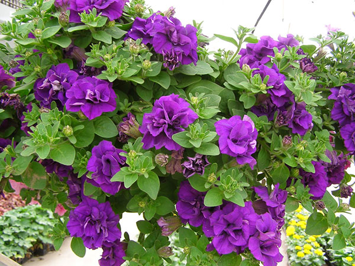

Hoa bằng lăng tím

Hoa bằng lăng có màu tím hồng đẹp, nên hiện nay thường được trồng làm cây cảnh đô thị hoặc được trồng trước sân trường. Gỗ bằng lăng nước màu nâu vàng, dẻo, dùng đóng đồ mộc thông thường hoặc có thể đóng thuyền.